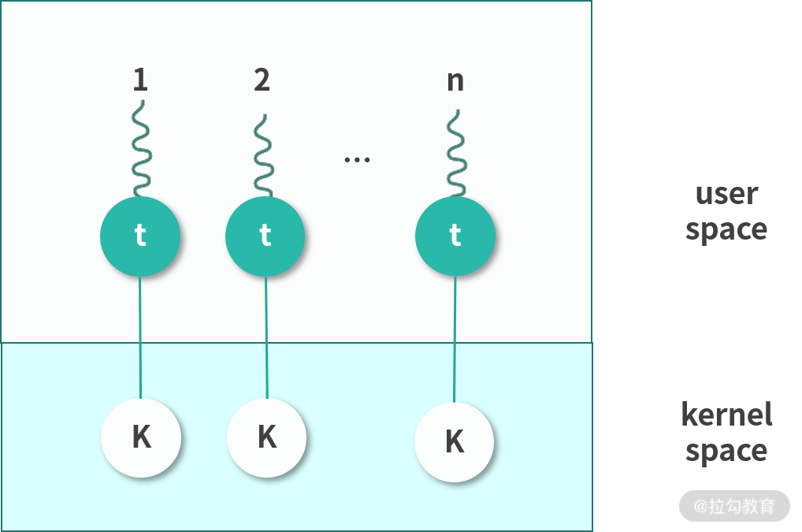

- 00 开篇词 为什么大厂面试必考操作系统？.md.html
- 00 课前必读 构建知识体系，可以这样做！.md.html
- 01 计算机是什么：“如何把程序写好”这个问题是可计算的吗？.md.html
- 02 程序的执行：相比 32 位，64 位的优势是什么？（上）.md.html
- 03 程序的执行：相比 32 位，64 位的优势是什么？（下）.md.html
- 04 构造复杂的程序：将一个递归函数转成非递归函数的通用方法.md.html
- 05 存储器分级：L1 Cache 比内存和 SSD 快多少倍？.md.html
- 05 (1) 加餐 练习题详解（一）.md.html
- 06 目录结构和文件管理指令：rm -rf 指令的作用是？.md.html
- 07 进程、重定向和管道指令：xargs 指令的作用是？.md.html
- 08 用户和权限管理指令： 请简述 Linux 权限划分的原则？.md.html
- 09 Linux 中的网络指令：如何查看一个域名有哪些 NS 记录？.md.html
- 10 软件的安装： 编译安装和包管理器安装有什么优势和劣势？.md.html
- 11 高级技巧之日志分析：利用 Linux 指令分析 Web 日志.md.html
- 12 高级技巧之集群部署：利用 Linux 指令同时在多台机器部署程序.md.html
- 12 (1)加餐 练习题详解（二）.md.html
- 13 操作系统内核：Linux 内核和 Windows 内核有什么区别？.md.html
- 14 用户态和内核态：用户态线程和内核态线程有什么区别？.md.html
- 15 中断和中断向量：Javajs 等语言为什么可以捕获到键盘输入？.md.html
- 16 WinMacUnixLinux 的区别和联系：为什么 Debian 漏洞排名第一还这么多人用？.md.html
- 16 (1)加餐 练习题详解（三）.md.html
- 17 进程和线程：进程的开销比线程大在了哪里？.md.html
- 18 锁、信号量和分布式锁：如何控制同一时间只有 2 个线程运行？.md.html
- 19 乐观锁、区块链：除了上锁还有哪些并发控制方法？.md.html
- 20 线程的调度：线程调度都有哪些方法？.md.html
- 21 哲学家就餐问题：什么情况下会触发饥饿和死锁？.md.html
- 22 进程间通信： 进程间通信都有哪些方法？.md.html
- 23 分析服务的特性：我的服务应该开多少个进程、多少个线程？.md.html
- 23 (1)加餐 练习题详解（四）.md.html
- 24 虚拟内存 ：一个程序最多能使用多少内存？.md.html
- 25 内存管理单元： 什么情况下使用大内存分页？.md.html
- 26 缓存置换算法： LRU 用什么数据结构实现更合理？.md.html
- 27 内存回收上篇：如何解决内存的循环引用问题？.md.html
- 28 内存回收下篇：三色标记-清除算法是怎么回事？.md.html
- 28 (1)加餐 练习题详解（五）.md.html
- 29 Linux 下的各个目录有什么作用？.md.html
- 30 文件系统的底层实现：FAT、NTFS 和 Ext3 有什么区别？.md.html
- 31 数据库文件系统实例：MySQL 中 B 树和 B+ 树有什么区别？.md.html
- 32 HDFS 介绍：分布式文件系统是怎么回事？.md.html
- 32 (1)加餐 练习题详解（六）.md.html
- 33 互联网协议群（TCPIP）：多路复用是怎么回事？.md.html
- 34 UDP 协议：UDP 和 TCP 相比快在哪里？.md.html
- 35 Linux 的 IO 模式：selectpollepoll 有什么区别？.md.html
- 36 公私钥体系和网络安全：什么是中间人攻击？.md.html
- 36 (1)加餐 练习题详解（七）.md.html
- 37 虚拟化技术介绍：VMware 和 Docker 的区别？.md.html
- 38 容器编排技术：如何利用 K8s 和 Docker Swarm 管理微服务？.md.html
- 39 Linux 架构优秀在哪里.md.html
- 40 商业操作系统：电商操作系统是不是一个噱头？.md.html
- 40 (1)加餐 练习题详解（八）.md.html
- 41 结束语 论程序员的发展——信仰、选择和博弈.md.html
- 捐赠
14 用户态和内核态：用户态线程和内核态线程有什么区别？
这节课给你带来了一道非常经典的面试题目：用户态线程和内核态线程有什么区别？
这是一个组合型的问题，由很多小问题组装而成，比如：
- 用户态和内核态是什么？
- 用户级线程和内核级线程是一个怎样的对应关系？
- 内核响应系统调用是一个怎样的过程？
- ……
而且这个问题还关联到了我们后面要学习的多线程、I/O 模型、网络优化等。 所以这是一道很不错的面试题目，它不是简单考某个概念，而是通过让求职者比较两种东西，从而考察你对知识整体的认知和理解。
今天就请你顺着这个问题，深入学习内核的工作机制，和我一起去理解用户态和内核态。
什么是用户态和内核态
Kernel 运行在超级权限模式（Supervisor Mode）下，所以拥有很高的权限。按照权限管理的原则，多数应用程序应该运行在最小权限下。因此，很多操作系统，将内存分成了两个区域：
- 内核空间（Kernal Space），这个空间只有内核程序可以访问；
- 用户空间（User Space），这部分内存专门给应用程序使用。
用户态和内核态
用户空间中的代码被限制了只能使用一个局部的内存空间，我们说这些程序在用户态（User Mode） 执行。内核空间中的代码可以访问所有内存，我们称这些程序在内核态（Kernal Mode） 执行。
系统调用过程
如果用户态程序需要执行系统调用，就需要切换到内核态执行。下面我们来讲讲这个过程的原理。

如上图所示：内核程序执行在内核态（Kernal Mode），用户程序执行在用户态（User Mode）。当发生系统调用时，用户态的程序发起系统调用。因为系统调用中牵扯特权指令，用户态程序权限不足，因此会中断执行，也就是 Trap（Trap 是一种中断）。
发生中断后，当前 CPU 执行的程序会中断，跳转到中断处理程序。内核程序开始执行，也就是开始处理系统调用。内核处理完成后，主动触发 Trap，这样会再次发生中断，切换回用户态工作。关于中断，我们将在“15 课时”进行详细讨论。
线程模型
上面我们学习了用户态和内核态，接下来我们从进程和线程的角度进一步思考本课时开头抛出的问题。
进程和线程
一个应用程序启动后会在内存中创建一个执行副本，这就是进程。Linux 的内核是一个 Monolithic Kernel（宏内核），因此可以看作一个进程。也就是开机的时候，磁盘的内核镜像被导入内存作为一个执行副本，成为内核进程。
进程可以分成用户态进程和内核态进程两类。用户态进程通常是应用程序的副本，内核态进程就是内核本身的进程。如果用户态进程需要申请资源，比如内存，可以通过系统调用向内核申请。
那么用户态进程如果要执行程序，是否也要向内核申请呢？
程序在现代操作系统中并不是以进程为单位在执行，而是以一种轻量级进程（Light Weighted Process），也称作线程（Thread）的形式执行。
一个进程可以拥有多个线程。进程创建的时候，一般会有一个主线程随着进程创建而创建。
如果进程想要创造更多的线程，就需要思考一件事情，这个线程创建在用户态还是内核态。
你可能会问，难道不是用户态的进程创建用户态的线程，内核态的进程创建内核态的线程吗？
其实不是，进程可以通过 API 创建用户态的线程，也可以通过系统调用创建内核态的线程，接下来我们说说用户态的线程和内核态的线程。
用户态线程
用户态线程也称作用户级线程（User Level Thread）。操作系统内核并不知道它的存在，它完全是在用户空间中创建。
用户级线程有很多优势，比如。
- 管理开销小：创建、销毁不需要系统调用。
- 切换成本低：用户空间程序可以自己维护，不需要走操作系统调度。
但是这种线程也有很多的缺点。
- 与内核协作成本高：比如这种线程完全是用户空间程序在管理，当它进行 I/O 的时候，无法利用到内核的优势，需要频繁进行用户态到内核态的切换。
- 线程间协作成本高：设想两个线程需要通信，通信需要 I/O，I/O 需要系统调用，因此用户态线程需要支付额外的系统调用成本。
- 无法利用多核优势：比如操作系统调度的仍然是这个线程所属的进程，所以无论每次一个进程有多少用户态的线程，都只能并发执行一个线程，因此一个进程的多个线程无法利用多核的优势。
- 操作系统无法针对线程调度进行优化：当一个进程的一个用户态线程阻塞（Block）了，操作系统无法及时发现和处理阻塞问题，它不会更换执行其他线程，从而造成资源浪费。
内核态线程
内核态线程也称作内核级线程（Kernel Level Thread）。这种线程执行在内核态，可以通过系统调用创造一个内核级线程。
内核级线程有很多优势。
- 可以利用多核 CPU 优势：内核拥有较高权限，因此可以在多个 CPU 核心上执行内核线程。
- 操作系统级优化：内核中的线程操作 I/O 不需要进行系统调用；一个内核线程阻塞了，可以立即让另一个执行。
当然内核线程也有一些缺点。
- 创建成本高：创建的时候需要系统调用，也就是切换到内核态。
- 扩展性差：由一个内核程序管理，不可能数量太多。
- 切换成本较高：切换的时候，也同样存在需要内核操作，需要切换内核态。
用户态线程和内核态线程之间的映射关系
线程简单理解，就是要执行一段程序。程序不会自发的执行，需要操作系统进行调度。我们思考这样一个问题，如果有一个用户态的进程，它下面有多个线程。如果这个进程想要执行下面的某一个线程，应该如何做呢？
这时，比较常见的一种方式，就是将需要执行的程序，让一个内核线程去执行。毕竟，内核线程是真正的线程。因为它会分配到 CPU 的执行资源。
如果一个进程所有的线程都要自己调度，相当于在进程的主线程中实现分时算法调度每一个线程，也就是所有线程都用操作系统分配给主线程的时间片段执行。这种做法，相当于操作系统调度进程的主线程；进程的主线程进行二级调度，调度自己内部的线程。
这样操作劣势非常明显，比如无法利用多核优势，每个线程调度分配到的时间较少，而且这种线程在阻塞场景下会直接交出整个进程的执行权限。
由此可见，用户态线程创建成本低，问题明显，不可以利用多核。内核态线程，创建成本高，可以利用多核，切换速度慢。因此通常我们会在内核中预先创建一些线程，并反复利用这些线程。这样，用户态线程和内核态线程之间就构成了下面 4 种可能的关系：
多对一（Many to One）
用户态进程中的多线程复用一个内核态线程。这样，极大地减少了创建内核态线程的成本，但是线程不可以并发。因此，这种模型现在基本上用的很少。我再多说一句，这里你可能会有疑问，比如：用户态线程怎么用内核态线程执行程序？
程序是存储在内存中的指令，用户态线程是可以准备好程序让内核态线程执行的。后面的几种方式也是利用这样的方法。

一对一（One to One）
该模型为每个用户态的线程分配一个单独的内核态线程，在这种情况下，每个用户态都需要通过系统调用创建一个绑定的内核线程，并附加在上面执行。 这种模型允许所有线程并发执行，能够充分利用多核优势，Windows NT 内核采取的就是这种模型。但是因为线程较多，对内核调度的压力会明显增加。

多对多（Many To Many）
这种模式下会为 n 个用户态线程分配 m 个内核态线程。m 通常可以小于 n。一种可行的策略是将 m 设置为核数。这种多对多的关系，减少了内核线程，同时也保证了多核心并发。Linux 目前采用的就是该模型。

两层设计（Two Level）
这种模型混合了多对多和一对一的特点。多数用户态线程和内核线程是 n 对 m 的关系，少量用户线程可以指定成 1 对 1 的关系。

上图所展现的是一个非常经典的设计。
我们这节课讲解的问题、考虑到的情况以及解决方法，将为你今后解决实际工作场景中的问题打下坚实的基础。比如处理并发问题、I/O 性能瓶颈、思考数据库连接池的配置等，要想完美地解决问题，就必须掌握这些模型，了解问题的本质上才能更好地思考问题衍生出来的问题。
总结
这节课我们学习了用户态和内核态，然后我们简单学习了进程和线程的基础知识。这部分知识会在“模块四：进程和线程”中以更细粒度进行详细讲解。等你完成模块四的学习后，可以再返回来看这一节的内容，相信会有更深入的理解。
最后，我们还讨论了用户线程和内核线程的映射关系，这是一种非常经典的设计和思考方式。关于这个场景我们讨论了 1 对 1、1 对多以及多对 1，两层模型 4 种方法。日后你在处理线程池对接；远程 RPC 调用；消息队列时，还会反复用到今天的方法。
那么通过这节课的学习，你现在是否可以来回答本节关联的面试题目？用户态线程和内核态线程的区别？
老规矩，请你先在脑海里构思下给面试官的表述，并把你的思考写在留言区，然后再来看我接下来的分析。
【解析】 用户态线程工作在用户空间，内核态线程工作在内核空间。用户态线程调度完全由进程负责，通常就是由进程的主线程负责。相当于进程主线程的延展，使用的是操作系统分配给进程主线程的时间片段。内核线程由内核维护，由操作系统调度。
用户态线程无法跨核心，一个进程的多个用户态线程不能并发，阻塞一个用户态线程会导致进程的主线程阻塞，直接交出执行权限。这些都是用户态线程的劣势。内核线程可以独立执行，操作系统会分配时间片段。因此内核态线程更完整，也称作轻量级进程。内核态线程创建成本高，切换成本高，创建太多还会给调度算法增加压力，因此不会太多。
实际操作中，往往结合两者优势，将用户态线程附着在内核态线程中执行。
© 2019 - 2023 Liangliang Lee. Powered by gin and hexo-theme-book.